排列、组合、二项式定理
【加法原理】
做一件事，完成它可以有n 类办法，在第一类办法中有m1种不同的方法，在第二类办法中有m2种不同的方法，……，在第n 类办法中有mn种不同的方法.那么完成这件事共有N ＝m1＋m2＋…＋mn 种不同的方法.
例 有四本不同的笔记本和三支不同的钢笔，任取一件做为奖品，可有几种不同的奖励办法?
解 取一个笔记本做为奖品可有4 种方法；取一支钢笔做为奖品可有3 种方法.两类方法都完成了一件奖品这件事，故不同的奖励办法数应是两类方法数的和，即4 ＋3 ＝7 (种).
说明: ①在使用加法原理时应注意，选用任何一类办法中的任何一种方法时都能完成这件事，即完成一件事的各种方法是独立的.②根据问题的特点，合理地确定一个分类的标准，并在此标准下，每一种完成此事的方法属于各类中的一种且仅属于其中的一种.
【乘法原理】
做一件事，完成它需要分成n 个步骤，做第一步有m1种不同的方法，做第二步有m2种不同的方法，……，做第n 步有mn种不同的方法.那么完成这件事共有N ＝m1×m2×…×mn种不同的方法.
例 用1，2，3，4，5 这五个数字，可以组成多少个没有重复数字的四位数? 其中有多少个偶数? 若数字可重复选取可组成多少个四位数?
解 四位数可由个位、十位、百位、千位四个数字构成，因此一个四位数可分四步完成.
①因为五个数字不能重复选取，所以组成个位数字有5 种方法，十位数字4 种方法，百位数字3 种方法，千位数字2 种方法，故不同的四位数有5 ×4 ×3 ×2 ＝120 个.
②组成四位偶数只需个位是偶数，故个位数字有2 种方法，十位数字有4 种方法，百位数字有3 种方法，千位数字有2 种方法，故不同的四位偶数有2 ×4 ×3 ×2 ＝48个.
③因为数字能重复选取，所以每一位数字都有5 种组成方法，故不同的四位数有5 ×5 ×5 ×5 ＝625 个.
说明: ①在使用乘法原理时应注意，完成一件事需分n 个步骤，这n 个步骤是互相依存的，即各个步骤都要完成，这件事才完成，缺一不可.②根据问题的特点，确定一个分步的标准，并且使得完成这件事的每一个步骤选用的方法和完成其它步骤时的方法无关.
【排列】
从n 个不同的元素中，任取m (m≤n) 个元素(一般是指被取出的元素各不相同的情况)，按照一定的顺序排成一列，叫做从n 个不同元素中取出m 个元素的一个排列.
说明: 在讲解排列概念时，要使学生清楚两个排列中如果组成的元素相同且排列顺序也相同，就是相同的排列，否则如果组成两个排列的元素不同或元素相同而排列顺序不同，就是不同的排列.还应让学生掌握写出从n 个不同元素中选出m 个不同元素的所有不同排列的方法.
【排列数】
从n 个不同元素中取出m (m≤n) 个元素的所有不同排列的个数。
【排列数公式】
两种主要形式
解(2n ＋1) (2n) (2n －1) (2n －2) ＝140n (n －1)(n－2)，
化简整理得4n2－35n ＋69 ＝0，
化简得(n－3) (n－4) ＋ (n－3) ＝4，
n2－6n ＋5 ＝0，解 之得n1＝1，n2＝5，∵n≥5，∴取n ＝5.
【全排列】
n 个不同元素全部取出的一个排列，叫做n 个不同元素
【阶乘】
自然数由1 到n 的n 个数连乘积叫做n 的阶乘，记作n! 读作n 阶乘，还规定0! ＝1.
【组合】
从n 个不同的元素中，任取m (m≤n) 个元素并成一组，叫做从n 个不同元素中取出m 个元素的一个组合.
说明: 通过组合概念应使学生理解，如果两个组合中的元素完全相同，不管元素的顺序如何，都是相同的组合，只有当两个组合中的元素不完全相同时，才是不同的组合，还要求学生掌握写出从n 个不同元素中，取出m个元素的所有不同组合的方法.
【组合数】
从n 个不同元素中取出m (m≤n) 个元素的所有不同组合个数，叫做从n 个不同元素中取出m 个元素的组合数，用符号Cmn 表示.
【组合数公式】
主要有三种形式
化简得x2－9x－22 <0，
解之得－2 <x<11，
∵x≥7，x∈N，∴x 取7，8，9，10.
说明: 在使用阶乘式时，学生易出现P2x －4 ＝ (x －4) (x－3)
【组合数的两个性质】
说明: 两个定理的内容要结合实际问题理解记忆.对于定理1，可理解为从n 个不同元素中有一种取出m 个元素的方法，就有一种剩下
∴原不等式变形为n2－3n－4≤0，
解 之得－1≤n≤4，∵n∈N，且n≥2，∴n 取为2，3，4.
【排列、组合应用题】
简单的排列组合应用题，可直接利用排列组合概念及排列组合种数计算公式解决.如: 从7 个人中选出3 人分别安排三项不同的工作，可有多少种安排工作的方法? 先选出三人每人安排一项工作，如果保持3 人不变而交换其中2 人的工作，显然是一种新的安排工作方法，即选出的元素有顺序，故是排列问题，所以安排工作的。对于较复杂的应用题，化繁为简是解决问题的重要思想，即合理使用加法和乘法原理，把一个复杂的应用题分解为若干个简单的排列组合问题处理.在考虑问题时，常对有特殊要求的元素或排列过程中有特殊要求的位置尽先安排处理，设计一个合理的工作程序，就能准确、迅速解题.
例 甲、乙等5 人站成一排，其中甲不在左端，乙不在右端，可有多少种排法?
解法一 先设计一个排队程序: 先排甲，甲可以排2、3、4、5 号位置上，但考虑到乙不排在左端，所以必须分两种情况考虑，即甲排2、3、4 号位置时，乙有3 个位置可排；甲排5 号位置时，乙有4 个位置可排.甲、乙排完后，其余3 人可任意排.
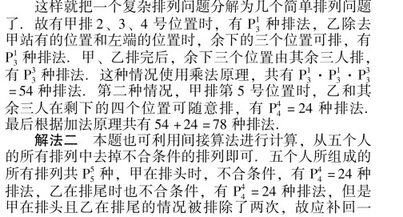
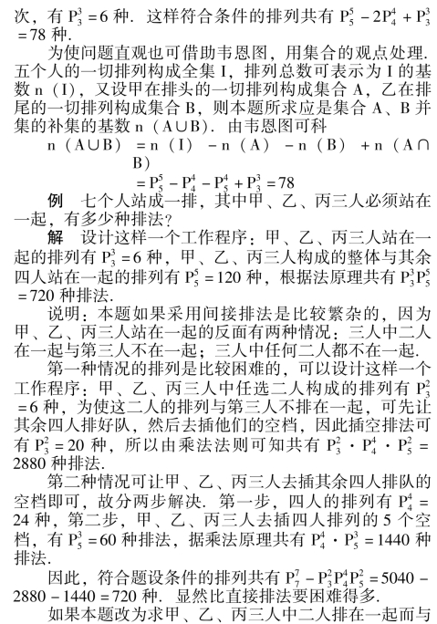
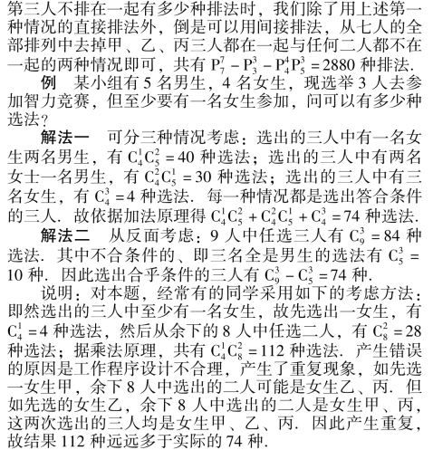
例 有6 本不同的书，
①分给三人，每人两本，有多少种分法?
②甲得一本，乙得二本，丙得三本，有多少种分法?
③一人得一本，一人得二本，一人得三本，有多少种分法?
④平均分成三堆，有多少种分法?
⑤分成三堆，一堆一本，一堆两本，一堆三本，有多少种分法?
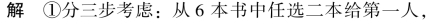
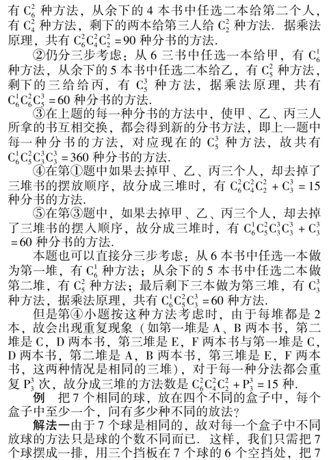
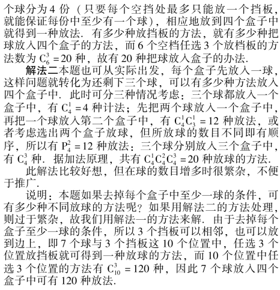
【二项式定理】
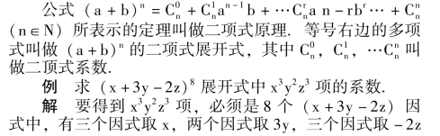
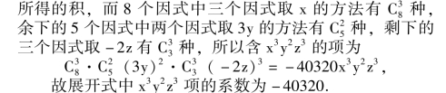
说明: 要让学生理解二项式系数的来源，以便用这一思想处理这类问题
例 求9911被100 除所得的余数.
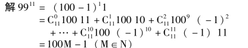
∵余数必须为小于100 的非负整数，∴9911除以100余数为99.
说明: 利用二项式定理处理某些整除问题，比起用数学归纳法证明要简单，因为二项式定理本身是用数学归纳法证明过的结论.
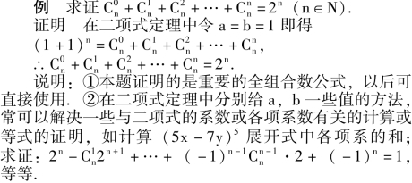
【二项展开式的通项公式】
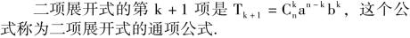
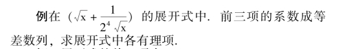
解 展开式的前三项为
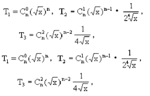
整理得n2－9n ＋8 ＝0，∵n>2，∴取n ＝8.
当n ＝8 时，展开式的第k ＋1 项为
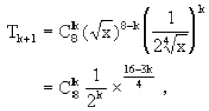
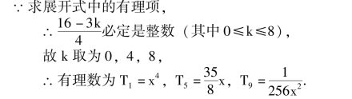
说明: 注意二项展开式中各项系数与二项系数的区别，各项系数是指各项的实际系数，二项系数是指用组合数表示的系数.
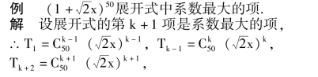
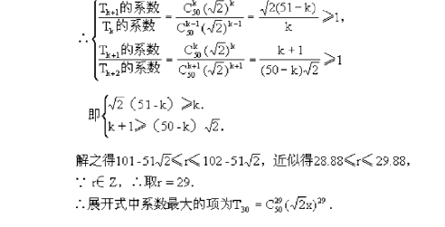
【杨辉三角】
遇到n 是较小的正整数时，二项式系数也可以直接用下表计算.
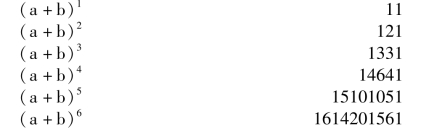
< >表中每行两端都是1，而且除1 以外的每一个数都等于它肩上两个数的和.这个表叫做杨辉三角.
【二项式系数的性质】
①在二项展开式中，与首末两端“等距离” 的两项的二项式系数相等.
②如果二项式的幂指数是偶数，中间一项的二项式系数最大；如果二项式的幂指数是奇数，中间两项的二项式系数相等并且最大.
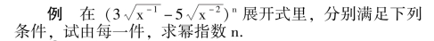
①含有12 项；
②第六、七两项系数绝对值最大；
③倒数第三项系数绝对值等于55.
解 ①∵展开式含有12 项，∴n ＝11.
②∵第六、七项系数绝对值最大，
∴第六、七项是展开式中间两项，故n ＝11.
③∵倒数第三项与正数第三项系数绝对值相等，
∴
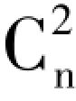
＝55，解之得n ＝11.